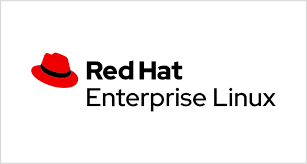

Este texto foi originalmente produzido pelos integrantes do grupo para fins de estudo e usado para a produção de trabalho escolar, portanto a profundidade é mínima em texto, confira a fonte de pesquisa para um estudo mais aprofundado.
A Red Hat começou em 1993, mas foi realmente criada em 1995. Suas primeiras versões eram chamadas de Red Hat Commercial Linux, desde então ela se destaca como a fonte de outras organizações famosas, como o Mandriva e o Fedora. Uma de suas inovações foi a utilização do gerenciador de pacotes RPM, ela também se destaca por ter sido a primeira distribuição a suportar arquivos no padrão EFL (executable and link format, ou formato executável e de ligação). Além disso, com o auxílio do assistente gráfico de instalação Anaconda, o uso por pessoas não familiarizadas com o Linux se tornou mais simples.
Em 2004 a Red hat se dividiu entre uma série de distribuições voltadas para o ambiente doméstico e corporativo. Com suporte para processadores x86, x86-64, Itanium, PowePC e IBM System z, o RHEL (Red Hat Enterprise Linux), a Red Hat é a versão ideal para gestores que buscam ambientes de trabalho mais produtivos e com performance elevada.
A Red Hat Enterprise Linux é hoje uma das principais distribuições Linux do mercado corporativo. Com o poder da comunidade, o sistema ganhou espaço em ambientes de virtualização, computação na nuvem e aplicações de alto desempenho.